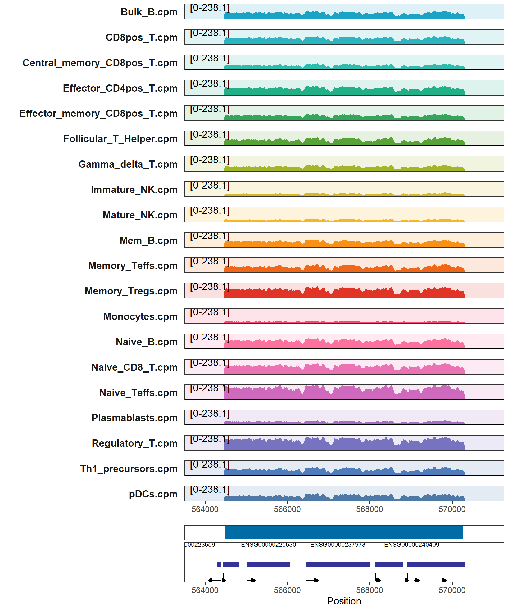
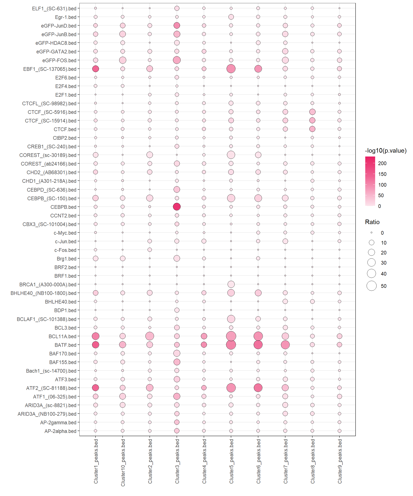

Chapter 16 Other Utils
16.1 Super Enhancer
Super Enhancers (SEs) are a specific type of gene regulatory region found in chromatin. They represent continuous and large open chromatin regions that are enriched with transcription factor binding and play a significant role in regulating gene expression.
SE <- getSuperEnhancer(sample_list = c("Bulk_B",
"Mem_B",
"Naive_B",
"Plasmablasts",
"CD8pos_T",
"Central_memory_CD8pos_T",
"Effector_memory_CD8pos_T",
"Naive_CD8_T",
"Gamma_delta_T",
"Effector_CD4pos_T",
"Follicular_T_Helper",
"Memory_Teffs",
"Memory_Tregs",
"Naive_Teffs",
"Regulatory_T",
"Th1_precursors",
"Immature_NK",
"Mature_NK",
"Monocytes",
"pDCs"),
peak_path = "F:/cisDynet/example/peaks/",
peak_suffix = "_peaks_unique.narrowPeak.bed",
N_top = 2000)
head(SE)## chrom start end peak_len peak
## 1 chr1 564574 570175 5601 chr1:564574-570175
## 2 chr6 143265261 143269026 3765 chr6:143265261-143269026
## 3 chr4 15003156 15006459 3303 chr4:15003156-15006459
## 4 chr6 119668798 119671885 3087 chr6:119668798-119671885
## 5 chr6 58776385 58779433 3048 chr6:58776385-58779433
## 6 chr4 185393609 185396587 2978 chr4:185393609-185396587We can use the plotTracks function to visualize this block.
plotTracks(samples_path = "F:/cisDynet/example/signal/",
samples_suffix = ".cpm.bw",
chr = "chr1",
start = 564495 - 1000,
end = 570261 + 1000,
peaks = "F:/cisDynet/example/MergedPeaks.bed")## Warning: Removed 2 rows containing missing values (`geom_rect()`).## Warning: Removed 1 rows containing missing values (`geom_segment()`).
16.2 Peak Fisher Test
The fisher test helps us to test whether two datasets are related. We take TF ChIP-seq as an example here to test the differences in transcription factors of different clusters of peak enrichment obtained earlier.
peak <- list.files("F:/cisDynet/example/enrich/", pattern = "_peaks.bed$", full.names = TRUE)
tfbs <- list.files("F:/cisDynet/example/TFBS/", pattern = ".bed$", full.names = TRUE)
res <- calFisherPeaks(peak_a = peak, peak_b = head(tfbs, 50))## 2023-10-23 19:19:51 Fisher testing for 10 x 50.head(res)## estimate p.value conf.low conf.high
## 1 1.541440 1.185133e-01 0.8190687 2.642936
## 2 1.537256 9.394381e-02 0.8934648 2.468511
## 3 2.213015 5.499898e-03 1.2358489 3.660488
## 4 6.203789 1.148844e-10 3.8295834 9.516538
## 5 10.108004 6.785026e-30 7.3700750 13.543631
## 6 20.200819 5.264431e-159 17.2126880 23.569503
## method alternative Peak1
## 1 Fisher's Exact Test for Count Data two.sided Cluster1_peaks.bed
## 2 Fisher's Exact Test for Count Data two.sided Cluster1_peaks.bed
## 3 Fisher's Exact Test for Count Data two.sided Cluster1_peaks.bed
## 4 Fisher's Exact Test for Count Data two.sided Cluster1_peaks.bed
## 5 Fisher's Exact Test for Count Data two.sided Cluster1_peaks.bed
## 6 Fisher's Exact Test for Count Data two.sided Cluster1_peaks.bed
## Peak2
## 1 AP-2alpha.bed
## 2 AP-2gamma.bed
## 3 ARID3A_(NB100-279).bed
## 4 ARID3A_(sc-8821).bed
## 5 ATF1_(06-325).bed
## 6 ATF2_(SC-81188).bedplotEnrich(fisher_res = res,scale_size = c(1,8))
16.3 SNP2Gene
With the Peak2Gene linkage obtained earlier, we can further annotate SNPs to help us to filter which SNPs may affect gene expression or phenotype. We can use the getSNP2Gene function to perform this.
snp2gene <- getSNP2Gene(snp = "F:/cisDynet/example/snp2gene.snp",
peak2gene = "F:/cisDynet/example/All_Peak2Gene_links.rds")
head(snp2gene)## SNP Peak Gene Correlation P_value
## 2 161155391 chr1:161154886-161155643 ENSG00000143258 0.4698867 1.546109e-03
## 3 161155391 chr1:161154886-161155643 ENSG00000158869 -0.5120015 4.442859e-04
## 7 161155391 chr1:161154886-161155643 ENSG00000158859 -0.4596825 2.097911e-03
## 9 161155391 chr1:161154886-161155643 ENSG00000158864 0.6088835 7.193641e-05
## 11 161155391 chr1:161154886-161155643 ENSG00000143258 0.4698867 1.546109e-03
## 12 161155391 chr1:161154886-161155643 ENSG00000158869 -0.5120015 4.442859e-04
## Type TSS Distance
## 2 Intragenic 161129240 26024
## 3 Intragenic 161185024 -29760
## 7 Intragenic 161168846 -13582
## 9 Intragenic 161166894 -11630
## 11 Intragenic 161129240 26024
## 12 Intragenic 161185024 -29760